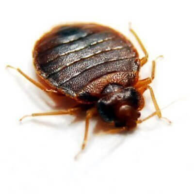

Simple Pest Defense system is a unique solution to the ongoing pest problem. Combining the most advanced chemistry, a season-specific treatment strategy and our professionally trained staff, we take the battle directly to your home's defensive zones.
free estimateBEDBUG SERVICE

Bedbugs are small, oval, brownish insects that live on the blood of animals or humans. Adult bedbugs have flat bodies about the size of an apple seed. After feeding, however, their bodies swell and are a reddish color. Bedbugs do not fly, but they can move quickly over floors, walls, and ceilings. Female bedbugs may lay hundreds of eggs, each of which is about the size of a speck of dust, over a lifetime. Immature bedbugs, called nymphs, shed their skins five times before reaching maturity and require a meal of blood before each shedding. Under favorable conditions the bugs can develop fully in as little as a month and produce three or more generations per year. Although they are a nuisance, they are not thought to transmit diseases. Simple Pest Solutions offers a new innovated non-toxic chemical treatment for bed bugs. With this type of method bed bugs are frozen and eliminated. Please contact office for more details.
BEDBUG BITES

What do bedbug bites look like?
Some people will not experience a reaction to a bedbug bite at all. Those that do experience symptoms of a bite are likely to experience one or more of the following:
- a bite with a red, swollen area and a dark red center
- bites in a line or grouped together in a small area
- blisters or hives at the bite site
FINDING THE PEST
Where are the hotspots?
Some people find bedbugs under the box spring, carpet, headboard, seams of the mattress, in molding, clothes, sneakers, anywhere that has fabric and a host to feed on.
- a proper inspection of the perimeter is required
- the threshold of the infestation is determined
- a liquid or a cryonite service is applied
SIMPLE SOLUTION
How do we treat for bedbugs?
Simple Pest Solution has two effective methods of treatment: One way is to use chemical treament that is mixed. The second is a freezing method called cryonite.
- we ask customers to choose a method
- we prep the area for treament
- we make sure the treatment was successful with a follow up
BEDBUG SERVICE
After mating, females lay white, oval eggs (1/16" long) into cracks and crevices. An individual bed bug can lay 200 to 250 eggs in her lifetime. The eggs hatch in 6 to 10 days and the newly emerged nymphs seek a blood meal. Immature nymphs molt five times (they shed their outer exoskeleton) before reaching adulthood. There may be three or more generations per year. All ages are found in a reproducing population. Under normal circumstances adult bed bugs will live for about 2 to 4 months. Bed bugs need to feed at least once before each molt, although they could feed as often as once a day. Young nymphs can survive without a blood meal for days up to several months. Older nymphs and adults can survive longer without a blood meal up to a year under favorable conditions. Bed bugs are also found in schools, retail facilities, office buildings, libraries and other public areas.
REVIEWS
Was suffering with bedbugs and called many companies and some couldn't get rid of the problem and some were mostly costly. I looked all over to try to find the right pest control company. I found simple pest solution online. The person I spoke to was very nice and seem like they knew what they were talking about. This company worked with me and solved my problem, I would recommend everyone to go here for a solution. Simple Pest Solution helped me and I Thank them.Ray C
I spent time looking for a pest control company I could trust to do the job right. I found Simple Pest Solution online. They asked me a few questions and were very polite. They explaned to me what to expect. I hired Simple Pest Solution and they were great. They found the problem and were very professional. They even followed up and came back to make sure everything was ok. I would recommend Simple Pest Solutions to anyone who has a pest problem.
For years I've had an awful problem with roaches , specifically in my kitchen! No matter how clean and spotless I'd work on keeping my kitchen, I just couldn't get rid of them. I finally took a gamble and searched online for the best of the best and decided to give simple pest a try, it took 2 visits and a profound exterminating service but it did the trick, I have not seen a roach or water bug in my kitchen since 2017!!! GOD BLESS YOU SIMPLE PEST SOLUTIONS!!!Brenda C